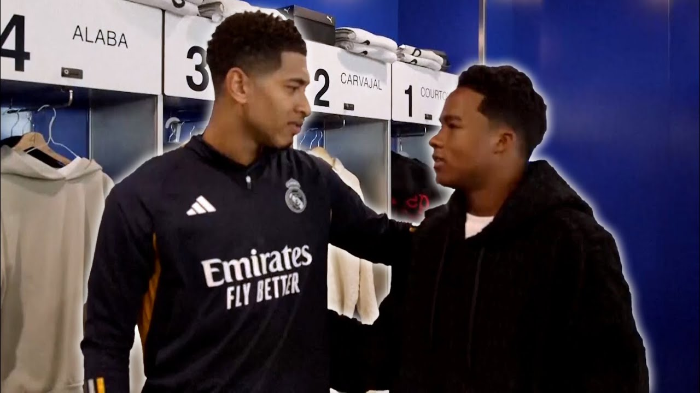

Endrick visita o Real Madrid
Há um ano, o Verdão fechou o acordo da seguinte forma: 35 milhões de euros fixos (R$ 198 milhões na cotação da época),
além de 25 milhões de euros
(R$ 141 milhões) em bônus.
Desta fatia variável, Endrick já atingiu metas que somam 7,5 milhões de euros
(cerca de R$ 40 milhões).